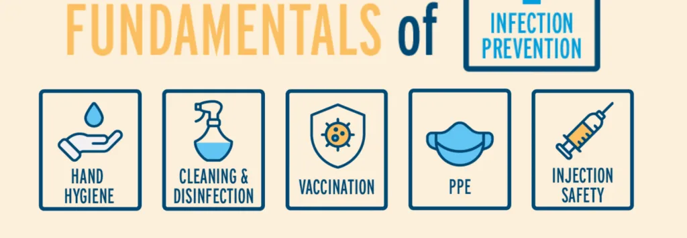
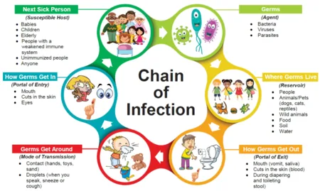
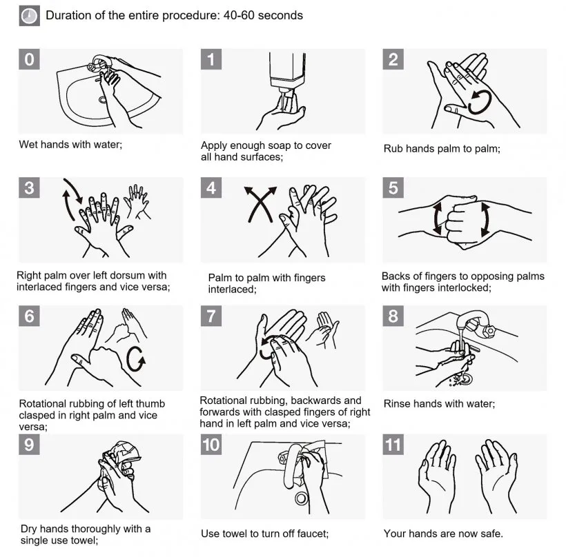
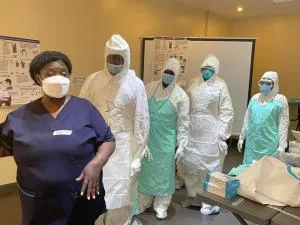
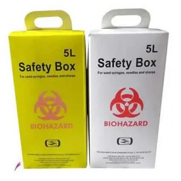
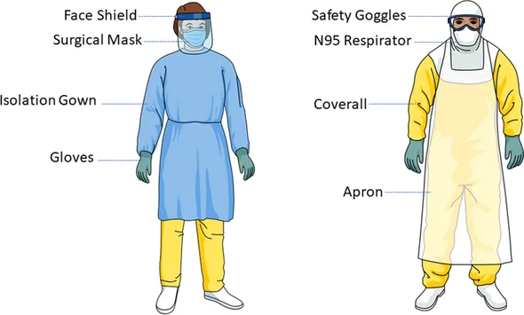
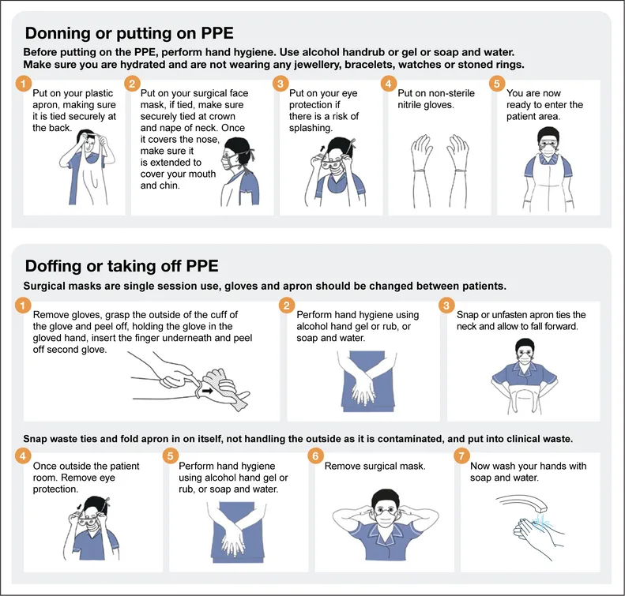
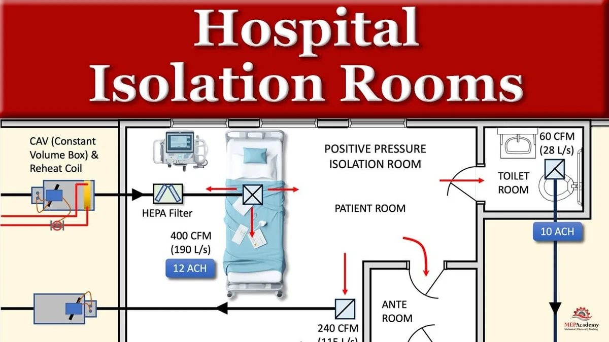

Expanded Nursing Uganda Explanation
Infection prevention methods links cause, transmission, prevention, assessment and treatment support. Good nursing notes should include infection prevention, danger signs, adherence support and community health education.
Contents — 25 sections (tap to expand)
01 Infection
Infection is the successful invasion and multiplication of micro-organism in the body to cause disease. There are many different species of micro-organisms that affect the human body as a host and cause a disease.
Some of the factors involved in transmission of infection are as follows;
Reservoir of infection:
- Men
- Animals
Mode of escape of micro-organisms:
- Nose - exhalation, sneezing (expired air).
- Mouth - coughing.
- Urinary system - urine.
- Gastrointestinal tract - faeces.
- Wounds and ulcers - discharge, pus.
- Skin - sweat e.g. Ebola, Hep.B.
Vehicle for transmission:
- Contaminated hands.
- Air
- Water
- Food
- Linen
- Crockery and cutlery
Mode of entry:
- Nose - inhalation
- Mouth - ingestion
- Urethra - direct contact
- Trans - placental
- Genital tract - direct contact with fluids
- Mucous membranes and unhealthy skin - direct contact i.e. gonorrhea can be got through kissing.
Susceptible host:
- People with low immunity.
02 Causes of infection
Infection happens when tiny living things called micro-organisms successfully enter the body and multiply, causing disease. There are many different types of micro-organisms that can affect the human body and cause illness.
For an infection to happen, there needs to be a chain of events. Breaking any link in this chain can prevent infection. The chain involves:
- Reservoir: Where the micro-organisms live and multiply (e.g., people, animals, environment).
- Mode of escape: How micro-organisms leave the reservoir (e.g., nose/mouth when coughing or sneezing, urine, feces, wounds, skin).
- Vehicle for transmission: How micro-organisms travel from the reservoir to another person (e.g., contaminated hands, air, water, food, linen).
- Mode of entry: How micro-organisms enter a new person's body (e.g., nose/mouth through breathing or eating, urethra, cuts in the skin).
- Susceptible host: A person who is at risk of getting the infection, usually because they have low immunity or are already weak.
03 Ways in which infection can be prevented (breaking the chain of infection)
Breaking the chain of infection is crucial in nursing. Key methods include:
Isolation or barrier nursing:
Is the separation of the patient and his unit from others to prevent the direct or indirect contact of infectious agents to a susceptible person e.g. droplet infection, clothing etc.
Hand washing:
Is the single most important means of preventing the transmission of infection. Careful washing of hands using soap, water and nail brush reduces the number of bacteria.
Use of protective gears:
Gears such as gloves, gowns, masks, gargles, gumboots; help protect the nurse from pathogen. They serve as a barrier when handling articles which are contaminated.
04 Principles of Infection Control
There are five basic universal principles of infection control;
- Routing hand washing
- Antiseptic hand washing
- Alcohol hand rub
- Surgical hand scrub
- Gloves; - sterile surgical single use gloves, examination disposable gloves, heavy-duty utility gloves
- Plastic aprons; - Wear these for all procedures where there is a potential of contamination from splashing of blood and body fluids, handling of soiled dressings and used linen from all patients.
- Gowns; - Worn in operating theatres and other areas where a patient may bleed heavily.
- Eye/face protection; - Protective eye wear and face masks be made fully available and worn where applicable.
- Boots; - Worn in places where spillage of blood, body fluids, secretion and excretions are anticipated. NB. Clean bots with soap and water immediately after use. In case of contamination with blood or body fluids; disinfect.
- Surgical masks; - Wear a mask to protect the mucous membranes of the nose and mouth from splashes of body fluids.
Sterilization policy is a code of practice, which if correctly followed will ensure a clean and safe health unit, where multiplication and spread of harmful microbes is kept under control.
Sharps should be handled with extreme caution to avoid injuries during use, disposal or reprocessing. Where possible, all sharps should be disposable.
- Safe waste management It is essential that every health care worker without exception, who handles and disposes the waste, understands the nature of waste and risks, the color code of waste bins, uses personal protective equipment, is conversant with emergency procedures, and is aware they are liable to discipline for non-compliance.
05 Principles of infection prevention and control
Infection prevention and control are very important in nursing to protect patients, healthcare workers, and the community. The main goal is to break the chain of infection. There are five basic universal principles of infection control:
- Hand washing: This is the single most important way to prevent the spread of infection. Proper hand washing with soap and water or using alcohol hand rub reduces the number of bacteria.
- Use of personal protective equipment (PPE): Wearing gloves, gowns, masks, and other protective gear creates a barrier to protect nurses from pathogens and prevents the spread of micro-organisms.
- Cleaning, disinfection, and sterilization: Cleaning removes visible dirt and most micro-organisms. Disinfection destroys most pathogenic micro-organisms. Sterilization destroys all micro-organisms, including tough spores and viruses. These processes are essential for making instruments and surfaces safe to handle.
- Safe waste management and disposal: Handling and disposing of medical waste correctly prevents the spread of infection. Waste should be segregated (sorted) at the point of generation.
- Isolation of infectious patients: Separating patients with infectious diseases from others helps prevent direct or indirect contact and stops the spread of pathogens.
Other important measures include maintaining a clean environment, ensuring proper ventilation, safe handling of food and water, safe disposal of waste, controlling rodents and insects, immunization, and promoting personal hygiene.
06 Use of personal protective equipment (PPE)
Using PPE correctly is a crucial part of infection control. PPE creates a barrier to protect you from contact with infectious materials.
- Adequate protective gears: Gloves: Wear sterile surgical gloves for procedures and examination disposable gloves for general tasks. Heavy-duty utility gloves are used for cleaning.
- Plastic aprons: Wear these for all procedures where there is a risk of splashing blood or body fluids, or when handling soiled linen from patients.
- Gowns: Wear gowns in areas like operating theatres or other areas where there is a risk of bleeding heavily.
- Eye/face protection: Protective eyewear (goggles or face shields) and face masks should be available and worn when there is a risk of splashes or sprays reaching your eyes, nose, or mouth.
- Boots: Wear boots in areas where there is a risk of spillage of blood, body fluids, or waste. Clean boots immediately after use and disinfect if there is contamination.
- Surgical masks: Wear a mask to protect your nose and mouth from splashes of body fluids.
07 Routine and weekly cleaning of the ward
Keeping the ward clean is essential for preventing infections. This involves daily and weekly cleaning tasks.
08 Daily Cleaning (Ward Maintenance):
- Collect all necessary equipment on the trolley.
- Make the patient’s beds and pull bed and lockers away from the wall.
- Collect and put away all the equipment not necessary on the ward for immediate use.
- The floor is swept and mopped.
- Carry out dump and dry dusting of all ward furniture and equipment, using the ward cleaning trolley.
- Return bed and lockers to their position.
- Replace sputum mugs with clean ones, empty the used ones, rinse well in the sluice room, leave soaked in the disinfectant.
- Give out clean drinking mugs and feeding cups. Refill bottles for drinking water if required.
- Clean used equipment and keep in the proper place.
09 In dressing and treatment rooms (Daily):
- Shelves: Wash daily and whenever necessary.
- Sinks and wash basins: Wash daily and after use with cleaning agent like vim or hebitane.
- Sterilizers: Empty, clean inside with hebitane when necessary, refill with clean water.
10 Equipment (Daily):
- Trolleys: Wash daily and thoroughly with soap and water. Do not use rough cleaners like gumption or vim on food trolleys.
- Trolley mop and jar: Boil daily, change or refill fresh lotion daily.
- Lifting forceps: Boil daily and whenever contaminated, clean forceps jars, boil forceps, and change lotion daily. Store boiled or autoclaved forceps in a dry sterile container.
- Soiled dressing buckets: Keep lid on at all times, keep the outside clean. Thoroughly clean after emptying.
11 Hygiene in Special Areas (Daily):
Operating theatre, Intensive Care Unit (ICU), Pre-mature unit, and Labour suit have stricter cleaning routines:
- Operating tables, trolleys and shelves: Damp dust daily using water and detergent.
- Walls: Damp cleaning 2.5-3m downward daily with water and detergent.
- Floors: Scrub with water and detergent daily and leave to dry when soiled.
- Floors with body fluid spills: Apply 1% hydrochloride for 15 minutes, then spot clean. Clean after every operation. Do weekly cleaning of all equipment and areas.
Note: The same method of cleaning applies to all other special areas.
12 Weekly Cleaning (In the ward):
- Move the beds from one side of the ward to the other.
- Put lockers outside the ward.
- Proceed on the empty side as follows:
- Brush walls and ceiling and wire gauze of ventilators with long handled brush.
- Wash painted walls with soap and water, cleaning any edges and corners carefully.
- Wash lamp shades.
- The sweeper then sweeps and scrubs the floor.
- Clean windows.
- Replace beds.
- Repeat the same procedure on the other side.
- Scrub lockers and return to the ward when dry.
- Turn out and scrub all cupboards.
- Polish furniture if necessary.
13 In the ward annexes (kitchen, bathroom, linen room etc) (Weekly):
- Turn out and clean both the room and equipment.
Refrigerators (Weekly): Defrost weekly, wash interior with hot soapy water, rinse, and replace shelves. Clean ice trays with cold water.
Suction machines (Daily/Whenever Used): Wash with soap and water daily and whenever used. Replace the lotion in the bottles.
Autoclaves (Daily): Dump dust daily, check functionality of water and pressure gauges. Unplug from the mains when not in use.
Boilers and sterilizers (Daily): Empty, clean inside with gumption/hebitane. Refill with clean water and always unplug from the mains when not in use.
Hot plates (Daily/When Spilled): Wipe any spills immediately with a dump cloth. Unplug from the mains when not in use.
Oxygen concentrators (Daily): Dump dust daily, check water in wolf's bottles and check the regulator. Unplug from mains and clean the filter.
Lamps (Daily): Dump dust shades and bulbs daily.
Oxygen cylinders (Daily): Dump dust daily, check flow meters, check oxygen level. Label empty cylinders "Empty."
Drainage under water seal gadgets (After Use): Disinfect, clean, and sterilize.
Beds (Daily/On Discharge): Make beds and dump dust rails daily. On discharge, wash beds with soap and water.
Bed rests/backrests (Daily): Dump dust daily, wash with soap and water, rinse, and dry when necessary.
Bed blocks/elevators (Daily/On Discharge): Dump dust daily. On discharge, scrub with soap and water.
Bed cradles (Daily/On Discharge): Wash with soap and water, rinse, and dry when necessary and on discharge.
Fracture boards (On Discharge): Scrub with soap and water.
Drip stands (Daily): Dump dust daily, wash with soap and water whenever necessary and keep dry.
Trolleys (Daily): Wash daily and after use with soap and water, dry thoroughly. Do not use rough cleaners on food trolleys.
Enamel ware (After Use): Wash with soap and water after use. If stained, use vim or hebitane/gumption, rinse, and dry.
Stainless steel ware (After Use): Wash with soap or detergent and water, rinse, and dry. Do not use vim.
Plastic ware (After Use): Wash with soap or detergent and water, rinse, and dry. Use vim if necessary.
Shelves (Daily/Whenever Necessary): Wash daily and whenever necessary.
Sinks and hand washing basins (Daily/After Use): Wash daily and after use with vim.
Crockery and glass ware (Daily): Wash daily with soap or detergent and water, rinse, and dry.
Cutlery (Daily): Wash with soap or detergent and water, rinse, and dry.
Soiled dressing buckets (Keep lid on at all times): Keep outside clean. Thoroughly clean after emptying. Use large basins for dusting; do not use receivers and bowls for this.
Infusion stands (Daily): Dump and dust daily, wash with soap and water, dry when necessary.
14 Isolation of infectious patients
Isolation is a key measure in infection control. It means separating a patient who has an infectious disease from other patients, visitors, and staff to prevent the spread of the infection.
The goal is to prevent direct contact (like touching) or indirect contact (like through contaminated objects or air) between the infectious patient and others who might be at risk.
Examples of infections that might require isolation include droplet infections or infections spread through contaminated clothing.
15 Perform Hand Washing (PEX 1.2.1)
Hand washing is the single most important means of preventing the transmission of infectious agents.
Rules for hand washing:
Wash hands;
- On starting and completion of duty shifts.
- Before performing any invasive or non-invasive procedures.
- Between handling of patients and between the procedures on the same patient.
- After handling of patients and procedures.
- After handling contaminated articles like urinals, bed pans etc.
- Nails should be short to avoid the dirt and micro-organisms.
- Remove the watch and jewelry from the hands and wrist before starting to wash the hands.
- Fold back sleeves above the elbow if necessary.
- Stand away from the wash basin.
- Avoid splashing water onto the uniform.
Requirements:
- Soap/antiseptic lotion/detol
- Bowl
- Nail brush
- Hand towel
- Running water/tap water
Procedure:
- Turn on the tap using the elbow and regulate the flow of water.
- Wet the hands and lower arms under the running water. Keep the hands, fore arms lower than the elbows during washing.
- Apply soap to the hands, replace soap in the dish.
- Scrub the hands, area between the fingers and wrist in rotatory movements for 15-30 seconds.
- Clean finger nails with a brush or use finger nails of the other hand.
- Rinse hands and wrist, fore arm and elbow in running water. Ensure that the hand and fore arm are lower than the elbow during washing.
- Close the tap using the elbow.
- Dry the hands from fingers to wrist and fore arm, now hold hands above the elbows ready to put on gloves for the procedure.
16 Surgical Hand Washing (Detailed Procedure)
The hands should be thoroughly cleaned for about 3-5 minutes (in operation room, hands are scrubbed up to 10 minutes.)
Procedure:
- Wet the hands and fore arms.
- Apply soap (containing 3% hexachlorophene) to make a good lather/foam e.g. Detol, Protex etc.
- Clean under the nails for 30 seconds. Nails should be kept very short.
- Rinse thoroughly
- Apply soap to the arms again
- Scrub with the brush so that every area receives 15-30 strokes.
- Add little amount of water frequently and use just enough detergent to maintain the lather.
- Rinse the arms and hands
- In rinsing keep palms higher than the elbow so that the water does not run over them from the arms.
- Dry on a sterile towel moving from the palms to the arms. Hold hands above the elbow ready to put on gloves for the procedure.
17 Demonstrate Appropriate Use of Protective Equipment (PEX 1.2.2)
Understanding and demonstrating the correct use of protective equipment is a crucial practical skill for nurses.
This PEX focuses on the practical demonstration of:
- Proper hand washing technique.
- Proper donning (putting on) of various protective gears like gloves, gowns, masks, and eye protection.
- Proper doffing (taking off) of protective gears to prevent self-contamination.
- Selecting the appropriate PPE based on the type of procedure and potential exposure.
18 Perform Routine and Weekly Cleaning of the Ward (PEX 1.2.3)
Maintaining a clean ward environment is crucial for infection prevention and patient well-being. This PEX involves demonstrating the practical skills of ward cleaning.
This PEX focuses on demonstrating:
- Following the established procedures for daily ward cleaning (as described in the 'Ward Maintenance Practices' section).
- Following the established procedures for weekly ward cleaning.
- Using appropriate cleaning agents and equipment.
- Maintaining a clean and tidy environment effectively.
- Performing damp dusting correctly.
WARD MAINTENANCE PRACTICES:
Daily Cleaning:
A. Ward Maintenance
- Collect all equipment necessary on the trolley.
- Make the patient’s beds and pull bed and lockers away from the wall.
- Collect and put away all the equipment not necessary on the ward for immediate use.
- The floor is swept and mopped .
- Carry out dump and dry dusting of all ward furniture and equipment, using the ward cleaning trolley.
- Return beds and lockers to their position.
- Replace sputum mugs with clean ones empty the used ones, rinse well in the sluice room, leave soaked in the disinfectant.
- Give out clean drinking mugs and feeding cups . Refill bottles for drinking water if required.
- Clean used equipment and keep in the proper place.
In dressing and treatment rooms:
- Shelves - Wash daily and whenever necessary
- Sinks and wash basins - wash daily and after use with vim or hebitane.
- Sterilizers - empty, clean inside with hebitane when necessary, refill with clean water.
- Trolleys - wash daily and after with soap and water, dry thoroughly. Do not use gumption or vim on food trolleys.
- Lifting forceps - boiled daily and whenever contaminated forceps jars cleaned, boiled and lotion changed daily. Lotion jar inspected daily and more lotion added if required. Or boiled or autoclaved daily and kept in a dry sterile container.
- Soiled dressing buckets - keep lid on at all times, keep the outside clean. And they should be thoroughly cleansed after emptying.
Hygiene in Special Areas (Operating theatre, Intensive care unit (ICU), Pre-mature unit and Labour suit.)
Operating theatre:
- Operating tables, trolleys and shelves - dump dust daily using water and detergent.
- Walls - dump cleaning 2.5-3m downward daily with water and detergent.
- Floors - scrub with water and detergent daily and whenever soiled and leave to dry.
- Floors where there are spillages of body fluids - apply 1% hydrochloride for 15min and spot clean. Clean after every operation. Do weekly cleaning of all equipment and areas.
Note: The same method of cleaning applies to all the rest of the special areas mentioned above (intensive care unit, pr-mature unit and labour suit.)
B. Equipment Maintenance (Detailed Procedures - extracted from your notes):
It is the responsibility of every health worker in the hospital to see that all equipment is very well looked after, serviced regularly and given immediate attention when there is any defect.
Equipment should be handled with care and breakages reported immediately, this will definitely keep the hospital expenditure very low.
1. Electric machine
Have regular servicing of the machines and as soon as they are out of order, make a requisition to the maintenance department, have them inspected and repaired.
- Refrigerators : These are regulated in order to be effective, regulators should be regularly checked and temperatures recorded every day. Defrosting should be carried out weekly, and then the interior is thoroughly washed with hot soapy water, rinsed and the shelves replaced. Ice trays are taken out and washed with cold water.
- Suction machines : Wash with soap and water daily and whenever used. Replace the lotion in the bottles.
- Autoclaves : Dump dust them daily, check the functionality of the water and pressure gauges. Always unplug from the mains when not in use.
- Boilers and sterilizers : Empty, clean inside with gumption/hebitane. When necessary refill with clean water and always unplug from the mains when not in use.
- Hot plates : Any substance spilt on it should be wiped off immediately using a dump cloth. Always unplug from the mains when not in use.
- Oxygen concentrators : Dump dust daily; make sure there is water in the wolf’s bottles and check the regulator daily. Always unplug from the mains when not in use and clean the filter.
- Lamps : Dump then dry and dust shades and bulbs daily.
2. Oxygen cylinders
Dump dust them daily. Check whether the flow meters are working; check whether there is oxygen in the cylinder and the far the water level in the wolf’s bottles. Label the empty cylinders boldly with the word ‘ Empty .’
3. Drainage under water seal gadgets
Disinfect, clean and sterilize.
4. Beds
Make them and dump dust the rails daily. On discharge of the patient; wash with soap and water.
5. Bed rests/backrests
Dump dust daily, wash with soap and water, rinse and dry when necessary and on discharge on an infectious patient disinfect.
6. Bed blocks/elevators
Dump dust daily. On discharge of the patients, scrub with soap and water.
7. Bed cradles
Wash with soap and water, rinse and dry when necessary and in discharge of the patient, scrub with soap and water.
8. Fracture boards
On discharge of the patients, scrub with soap and water.
9. Drip stands
Dump dust daily, wash with soap and water whenever necessary and keep them dry.
10. Trolleys
Wash daily and after use with soap and water, dry thoroughly. Do not use vim on food trolleys.
11. Enamel ware
Wash with soap and water after use, if stained use vim or hebitane/gumption, rinse and dry.
12. Stainless steel ware
Wash with soap or detergent and water, rinse and dry. Do not use vim.
13. Plastic ware
Wash with soap or detergent and water, rinse and dry. Use vim if necessary.
14. Shelves
Wash daily and whenever necessary.
15. Sinks and hand washing basins
Wash daily and after use with vim.
16. Crockery and glass ware
Wash daily with soap or detergent and water, rinse and dry.
17. Cutlery
Wash with soap or detergent and water, rinse and dry.
18. Soiled dressing buckets
Keep the lid on at all times, keep the outside clean. They should be thoroughly cleaned after emptying.
N.B: Use large basins for dusting; do not use receivers and bowls.
19. Infusion stands
Dump and dust daily, wash with soap and water, dry when necessary.
Weekly Cleaning:
In the ward:
- Move the beds from one side of the ward to the other
- Put lockers outside the ward
Proceed on the empty side as follows;
- Brush walls and ceiling and wire gauze of ventilators with long handled brush.
- Wash painted walls with soap and water, cleaning any edges and corners carefully.
- Wash lamp shades.
- The sweeper then sweeps and scrubs the floor.
- Clean windows.
- Replace beds
Repeat the same procedure on the other side.
- Scrub lockers and return to the ward when dry.
- Turn out and scrub all cupboards.
- Polish furniture if necessary.
In the ward annexes (kitchen, bathroom, linen room etc)
Turn out and clean both the room and equipment.
Refrigerators:
Defrosting should be carried weekly, when the interior is washed thoroughly with hot soapy water, rinsed and the shelves replaced. The ice trays are taken out and washed with cold water.
Bedding and linen:
Care of mattress foam-rubber with cotton and plastic:
Do not remove the plastic mattress cover, wash with soap and water, rinse and dry whenever necessary.
Pillows:
May be protected by plastic cover under cotton cover, to avoid soiling. The cover is removed for laundry whenever dirty, do not remove the plastic cover, wash with and soap, dry and put on the cover.
Rubber goods:
Use only soap and cold water. Before hanging to dry wipe off excess water, do not fold if they are to be out of use for a long time, powder them before storing away.
Do not hang on hot pipes or boiling sterilizers or in the sun.
All linen from the infectious patients should be soaked in disinfectant and soiled linen should be sluiced before sending to laundry.
If linen has been stained with blood soak in cold water for 2-3 hours then rinse.
On discharge of patients all linen should be removed and sent to laundry.
Rubber sheets:
Mackintoshes are washed in soapy water and rinsed, hang out to dry, but never folded.
Rubber tubing:
Rubber tubing-catheters and long tubing; these should be washed in soapy water, and under running water, rolled in the hands immediately after use. Rinse and roll and hang to dry.
Woolen blankets:
Bed blankets; avoid frequent washing, but they should be sent to laundry whenever soiled.
Ward linen:
To avoid cross infection in hospitals great care should be taken in handling of soiled linen contain discharges from patients.
During bed making soiled linen should be separated and be put in a special dirty container/hamper.
A trolley should be used for clean linen.
DAMP DUSTING:
Is the cleaning/brushing off, of the dust from a surface using a slightly wet cloth e.g. as of a table, chair, floor or wall etc.
Requirement (prepare a trolley):
Top shelf:
- Basin of clean water
- Soap and vim
- 2 Clean dusters in bowl
- A jar of clean water
Bottom shelf:
- Container for rubbish
- Bucket for dirty water
- Gloves
- Apron
- Gumboots
Procedure:
- Wash hands and put on gloves. Put on apron and gumboots.
- Always start to dust from the highest points or things first and work downward so you do not dirtied surfaces already cleaned.
- Remove items from the surface to be cleaned.
- Dampen or rinse the cloth in cleaning water.
- Wipe away the dust with the damp cloth/duster.
- Flat surfaces, wipe in straight lines beginning with the edges once each time.
- Turn the cloth on each side 2 nd pass and rinse regularly in clean water.
- Take care to damp dust the edges and undersides of the surfaces after the tops.
- Where there are extendable items, such as bedside tables, are to be damp dusted extend the before beginning to work.
- Polish with the dry duster to clean and dry.
- Change the cleaning water when it becomes soiled (dirty)
- Greasy or stubborn deposits may require repeated passes.
- Replace any items moved on the clean surface when it is dry.
- On completion, clean and dry all equipment and store safely and tidily in a secure storage area.
- Remove gloves and wash hands.
- Document the procedure
N.B: The basin used for dusting should be large one, receivers and dressing bowls are not to be used.
19 Carry out Appropriate Waste Management and Disposal (PEX 1.2.4)
Effective waste management is essential for preventing the spread of infection in a healthcare setting. This PEX involves demonstrating the practical skills of waste segregation and disposal.
This PEX focuses on demonstrating:
- Segregating waste correctly at the point of generation using the established color codes.
- Using appropriate containers for different types of waste.
- Handling and disposing of waste safely to minimize risks.
- Properly disposing of sharps.
- Understanding and implementing emergency procedures related to waste handling.
20 MEDICAL WASTE SEGREGATION:
Segregate waste at the point of generation according to the type. Place each type in a separate bin/container that is color coded according to the type of waste. The bins should be well covered and the waste handlers should wear protective gears.
- Type of waste Category Type of bin
- -Discarded paper, packing material, empty bottles or cans, food peelings. Non-infectious waste ✓ Wet waste ✓ Dry waste Two black bins
- -used gauze or dressing, used I.V fluid lines, used giving sets. Infectious waste Yellow bin
- -sputum containers, used test tubes, extracted teeth, all anatomical waste e.g. placenta. -pathological wastes. Highly infectious waste Red bin
- -pharmaceutical waste e.g. expired drugs. -laboratory waste e.g. expired reagents Toxic waste Brown bin
- -used syringe needles, needle cuts, cut from used infusion sets, used scalpels, blades and broken glass. Sharp waste Safety box.
Proper sharp disposal:
Sharps should be handled with extreme caution to avoid injuries during use, disposal or reprocessing. Where possible, all sharps should be disposable .
21 Carry out Isolation of Infectious Patients (PEX 1.2.5)
Isolating patients with infectious diseases is a critical measure to prevent transmission. This PEX focuses on the practical application of isolation procedures.
This PEX focuses on demonstrating:
- Identifying patients who require isolation.
- Placing the patient in the appropriate isolation room or area.
- Implementing specific isolation protocols based on the mode of transmission (e.g., airborne, droplet, contact).
- Ensuring appropriate use of PPE when entering and leaving the isolation area.
- Educating the patient, family, and other staff about the isolation protocols.
- Maintaining necessary supplies within the isolation area.
Definition of Isolation:
Is the separation of the patient and his unit from others to prevent the direct or indirect contact of infectious agents to a susceptible person e.g. droplet infection, clothing etc.
- Infection prevention and control principles
- Definition of infection
- Chain of infection
- Modes of transmission (Causes of Infection)
- Types of microorganisms (relevant to causing infection)
- Sterilization and disinfection techniques
- Medical waste management
- Hand hygiene
- Isolation procedures
- Use of Personal Protective Equipment (PPE)
- Routine and terminal cleaning
- Topic: Carry out infection Prevention and control
- PEX 1.2.1: Perform hand washing
- PEX 1.2.2: Demonstrate appropriate use of protective equipment
- PEX 1.2.3: Perform routine and weekly cleaning of the ward
- PEX 1.2.4: Carry out appropriate waste management and disposal
- PEX 1.2.5: Carry out isolation of infectious patients
- Uganda Catholic Medical Bureau (2015) Nursing and Midwifery procedure manual 2nd Edition Print Innovations and Publishers Ltd. Uganda
- Nettina .S,M (2014) Lippincott Manual of Nursing Practice 10th Edition, Wolters Kluwer, Philadelphia, Newyork
- Gupta, L.C., Sahu,U.C. and Gupta P.(2007):Practical Nursing Procedures. 3rd edition. JAYPEE brothers, New Delhi.
- Craveni, R. Hirnle, C. and Henshaw, M.C. (2017). Fundamentals of Nursing Human Health and Function. 8th Edition. Wolters Kluwer
- Hill, R., Hall, H and Glew, P. (2017). Fundamentals of Nursing and Midwifery, A person-Centered Approach to care. Wolters Kluwer
- Rosdah I, BC and Kowalkski, TM (2017) Text book for Basic Nursing 11th Edition Wolters Kluwer.
- Samson .R. (2009) Leadership and Management in Nursing Practice and Education 1st Edition Jaypee Brothers Medical Publishers India.
- Taylor.C.R (2015) Fundamentals of Nursing, The Art and Science of person – centred nursing care, 8th Edition Wolters Kluwer, Health/Lippincott Williams and Wilkins.
- Timby, K.B (2017) Fundamental Nursing Skills and concept 11th Edition Wolters Kluwers, Lippincotts Williams and Wilkins.
- Lynn, P. (2015) Tyler's Clinical nursing skills, A Nursing Process Approach 4th Edition Wolters Kluwers, China
- Gupta, D.S. (2005) Nursing Interventions for the critically ill 1st Edition Jaypee Brothers Medical Publishers Ltd. India.
- Uganda Catholic Medical Buraeu (2010) Nursing and Midwifery Procedure Manual. 1st Ed. Print Innovations and Publishers Ltd., Uganda.
- Carter, J. P. (2012) Lippincott's Textbook for nursing Assistant. 3rd Edition. Walters Kluwers. Lippingcotts Williams and Wilkins
- Jensen, S. (2015) Nursing Health Assessment; A host Practice Approach. 2nd Edition. Wlaters Kluwer,
- Gupta, D.S. (2005) Nursing Interventions for the Critically Ill. 1st Edition. Jaypee Brothers Medical Publishers Ltd. India.
- UCMB. (2015) Nursing and Midwifery Procedure Manual. 2nd Edition. Print Innovation and Publishers Ltd. Kampala. Uganda.
- Karesh, P. (2012) First Aid for Nurses. 1st Edition. Jaypee Brothers Publishers Ltd. India.
- Molley, S. (2007) Nursing Process; A Clinical Guide. 2nd Edition. Jaypee Brothers Medical Publishers Ltd. India.
- Carter, J.P. (2016) Lippincott's Textbook for Nursing Assistants. 4th Edition. Wolters Kluwer, Lippincotts Williams and Wilkins.
- Rahim,A. (2017). Principles and practices of community medicine. 2nd Edition. JAYPEE Brothers Medical Publishers Ltd. New Delhi
- Cherie Rector, (2017),Community & Public Health Nursing: Promoting The Public's Health 9e Lippincott Williams and Wilkins
- Gail A. Harkness, Rosanna Demarco (2016) Community and Public Health Nursing 2nd edition, Lippincott Williams and Wilkins
- Basavanthapp, B.T and Vasundhra, M.K (2008), Community Health Nursing, 2nd edition. JAYPEE Brothers Medical Publishers Ltd. New Delhi
- Kamalam, S. (2017), Essentails in Community Health Nursing Practice 3rd edition. JAYPEE Brothers Publishers Ltd. New Delhi
- James F. McKenzie, PhD, MPH, MCHES, MEd,and Robert R. Pinger, PhD, (2018) An Introduction to Community & Public Health, 9th edition, Jones and Bartlett Publishers. Sandburg, Massachusetts.
- Maurer, F.A, Smith, C.M (2005), Community /Public health Nursing Practice, 3rd edition ELSEVIER SAUNDERS, USA
- МОН, (2013) Occupational Safety and Health Training Manual, 1st Edition
- МОН, (2008), Policy for Mainstreaming Occupational Health & Safety In The Health Service Sector.
- Wooding, N. Teddy, N. Florence, N. (2012) Primary Health Care in East Africa. 1st Edition. Fountain Publishers. Kampala. Uganda.
22 Nursing Uganda Clinical Lens
Use Infection Prevention and Control as a practical nursing topic, not only a memorized definition. Link cause, transmission, incubation, clinical features, treatment support and prevention.
- What to understand first: define infection prevention and control, identify the normal or expected pattern, then explain what changes when the patient is unwell.
- Why it matters in care: the nurse must recognize risk early, explain findings clearly, document accurately and know when to escalate.
- How to revise it: connect each point to assessment, nursing diagnosis or care problem, intervention, rationale and evaluation.
23 Assessment Guide
- Temperature, pulse, respiratory status, hydration, pain, rash, wounds, stool, urine or sputum changes.
- Exposure history, travel, contacts, vaccination status and comorbidities.
- Specimen orders, isolation needs, antimicrobial history and danger signs.
24 Nursing Priorities, Rationales and Outcomes
- Use standard precautions and transmission-based precautions where needed.
- Support hydration, nutrition, medicines, monitoring and early referral for severe disease.
- Teach prevention, adherence, hygiene, safe water, vector control or contact tracing as relevant.
The rationale for these priorities is patient safety: nursing actions should prevent deterioration, reduce discomfort, support recovery and create clear evidence for the next caregiver.
- Expected outcome: Symptoms improve, complications are detected early, transmission risk is reduced and treatment is completed correctly.
25 Patient Teaching and Revision Check
- Explain infection prevention and control in simple language the patient or caregiver can repeat back.
- Teach warning signs, medicine or follow-up instructions, hygiene or lifestyle points where relevant.
- For exams, prepare a short answer using: definition, causes or risk factors, signs, assessment, management, complications and prevention.
- For ward practice, document baseline findings, actions taken, patient response and the plan for review.
Illustrations and Diagrams (8)








Related Video Lectures
Watch nursing lecture videos on YouTube for this topic. Opens in a new tab.
Watch on YouTubeExternal link: YouTube may use its own cookies and terms. Nursing Uganda is not affiliated with YouTube.